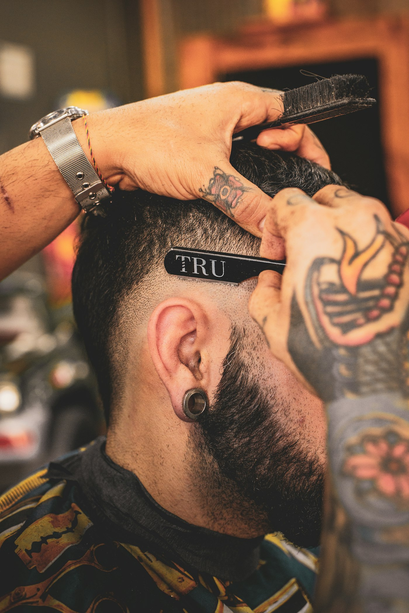
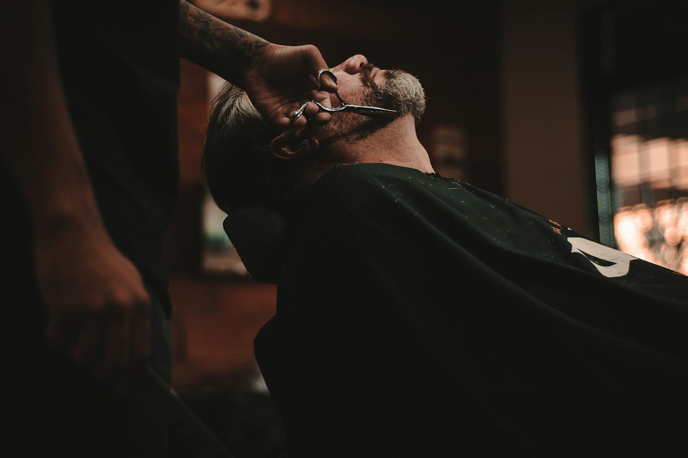
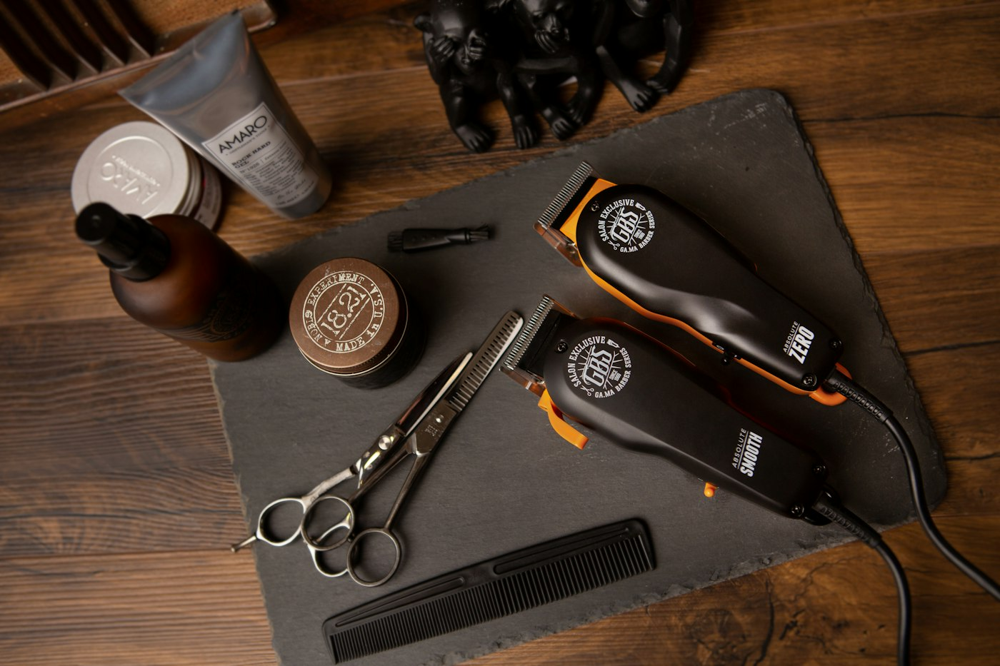

A barbearia
Tradição no corte, cuidado nos detalhes.

Nossa história
A Coimbra Barbearia nasceu para unir a atmosfera clássica das barbearias tradicionais a um olhar atual sobre o estilo masculino.
Cada atendimento começa ouvindo o cliente. O objetivo é que você saia bem cuidado, confiante e com um visual que faça sentido para você.
Texto de exemplo: substitua pela história real da barbearia.
Nossos diferenciais
Atendimento cuidadoso
Seu estilo em primeiro lugar, do primeiro contato ao acabamento.
Técnica e precisão
Do corte clássico ao moderno, com atenção a cada detalhe.
Ambiente com identidade
Conforto sem perder a tradição da barbearia.
Galeria



Imagens de exemplo. Troque por fotos reais da barbearia.